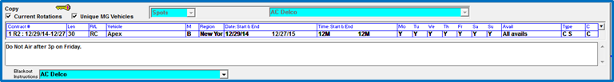
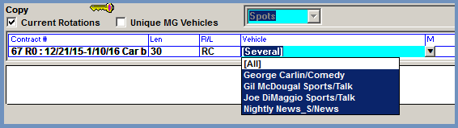
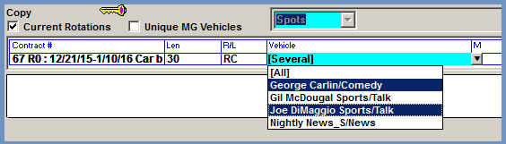
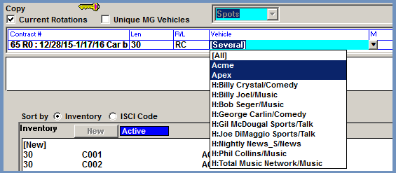
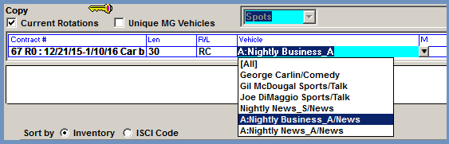

How to Create a Copy Rotation
Rotation instructions that come from the advertiser/agency are input into the system as Copy Rotations. The Copy Rotation is made up of header information – such as the vehicle or vehicles the rotation applies to, the start and end dates, the valid days, and so on – and the Rotation Instructions, which includes the inventory that is supposed to air within the header parameters.
Rotation Entry Options
There are two ways that rotation instructions can be entered: individually or by using the Copy Grid. When creating a rotation individually, each set of instructions is created one at a time. If there’s only one or a few sets of instructions to enter for a single contract, using the individual method may be best. If there are multiple sets of regional instructions for a single contract and date range, the Copy Grid can be used to more quickly enter multiple rotation instructions at the same time. When using the Copy Grid, the user also has the ability to create and save new copy regions as they are entered (rather than having to first enter them separately), and use or re-use template grids that are saved for future use.
How To Fill Out the Rotation Header
When entering a copy rotation, the rotation header area is filled out first, whether entering rotations one at a time or using the Copy Grid. This section covers what to enter in each field of the rotation header area.

Advertiser selection: Select the advertiser from the advertiser dropdown at the top of the screen.
Spots/Billboards: The three choices in this field are “Spots”, “Open BB”, and “Close BB”. If Billboards are not enabled, only “Spots” will be available on this dropdown. If Billboards are enabled and the rotation is being created for Open Billboards or Close Billboards, select that option here.
Current Rotations: This checkbox is used to determine whether current or all rotations are shown in the rotation dropdown accessed from the dropdown arrow on the right side of the rotation header area. It can be ignored when creating a new rotation.
Unique MG vehicles: This checkbox is used for creating rotations for makegood vehicles. Checking it on will show unique makegood vehicles in the vehicle dropdown of the rotation header.
Contract #: Select the contract number that the rotation is being created for.
Len: Select the length of the copy being used for this rotation. Only one length can be selected at a time, and only valid lengths for the selected contract will be shown.
R/L: Select the value that matches the audio type defined for the contract line. The available options are:
- RC: recorded commercial
- LP: live promo (only available if “Using promo with schedule lines” is enabled in Traffic Site Options->Copy).
- RP: recorded promo (only available if “Using promo with schedule lines” is enabled in Traffic Site Options->Copy).
- PC: pre-recorded commercial
- PP: pre promo (only available if “Using promo with schedule lines” is enabled in Traffic Site Options->Copy).
- LC: live copy (only available if Live Copy is enabled in Traffic Site Options on the Options tab, System options section)
Vehicle: This field is used to determine what vehicles the rotation will be for. When tabbing to this field, the system automatically selects the contract vehicles, so if the rotation is for all the vehicles on the contract, you can just tab past this field. If there are multiple vehicles on a contract, the system will display the word “[Several]” in the Vehicle field. The vehicles that are being included will be highlighted in blue in the vehicle dropdown list that appears in the vehicle field.

If the rotation instructions being entered are for a subset of the vehicles on the contract, Ctrl-Click can be used to select the vehicles that should be included. (Click the first vehicle, then Ctrl-Click the other vehicles that should be included.) Alternatively, to select a number of vehicles listed together, click the first vehicle, then Shift-Click the last vehicle.

When creating rotations for packages, the system will default to selecting the package vehicle, but the hidden line vehicles can be selected using Ctrl-Click. Hidden line vehicles are shown with a letter “H” next to the vehicle name.

If an airing vehicle is set to “allow copy on airing vehicle”, airing vehicles will also be listed when applicable in the Vehicle dropdown with a letter “A” prior to the vehicle name, from where they can be selected by clicking on them, as shown below.

M: Based on Traffic Site Options->Copy settings, this field determines whether makegoods and outsides will receive copy from the vehicle the spot was ordered for, or the vehicle the spot was moved to. This value can either be pre-determined, when the “always use above rules” option is selected in Traffic Site Options (in which case the field will be blank when first entering a new rotation and bypassed automatically), or can be chosen by the user at the time of rotation entry, when the “ask above rule in copy” option is selected in Traffic Site Options. There are three values available for this field:
- “O”- Makegood and Outside assigned by original vehicle: regardless of where a spot is moved, the spot will get the copy from the rotation for the original (ordered) vehicle.
- “S”- Makegood and Outside assigned by scheduled vehicle: the spot will get copy from the rotation for the vehicle that the spot was moved to (currently scheduled on). When this option is enabled in Traffic Site Options, the Copy Screen defaults to always show makegood vehicles in the vehicle dropdown to facilitate creating rotations for makegood (and outside) vehicles. Makegood vehicles have the letters “MG” before the vehicle name when shown in the vehicle dropdown.
- “B”- Makegood and Outside assigned by original vehicle or scheduled vehicle: copy assignment will first look to see if a rotation has been defined for the scheduled vehicle, and if it exists then the makegood/outside spot will get that copy, but if a rotation does not exist for the scheduled vehicle, it will use the rotation for the original/ordered vehicle.
Region: The Region field is used to determine whether to enter copy rotations using the Copy Grid, which allows for faster entry of multiple rotations for a single contract, or whether to enter rotations one at a time, and if they’re being entered one at a time, whether the rotation is a generic or regional rotation. Select “Grid” from the Region field to use the Copy Grid, which will bring up the Copy Grid screen over the Inventory and Rotations Instruction area (how to use the Copy Grid is explained in detail in a later section of this document). If entering copy rotations one at a time, select “Generic” to enter a Generic rotation; or select a previously defined copy region to enter a regional rotation. (Note: time zones may also be visible in the region area but when entering time zone specific copy, it is recommended to define time zone regions using the Region button instead of choosing the pre-defined time zones from this field.)
Important Note: When entering generic and regional copy instructions one at a time, be sure to always enter the generic copy instructions first, then the regional copy. This ensures that all applicable stations get the correct copy. If only the regional copy was entered, then the stations outside of the region would receive no copy. Or if the regional copy was entered first then the generic copy, because the system always assigns the highest rotation number first, no stations would get the regional copy because they would all be assigned the generic copy as it would have a higher rotation number than the regional copy that was mistakenly entered before the generic rotation instructions.
Date: Start & End: Enter the start and end date of the rotation instructions.
Time: Start & End: Enter the start and end time of the rotation instructions. It defaults to 12M-12M (all 24 hours of the day), but this can be changed if needed (for example, if there was one set of rotation instructions for 6a-10a, and a different set of rotation instructions for another time range). If entering times in this way, be sure that all the spot times are covered by running the contracts missing copy report before assigning copy and generating final logs.
Mo, Tu, We, Th, Fr, Sa, Su: Set the valid days to “Yes” and the invalid days (if any) to “No”.
Avail: There are three options available in this field.
- All avails: When selecting this option it means that the copy will get assigned to any avail name that spots are in as long as they match the other rotation header criteria.
- Book into: This option is used to create a rotation that only applies to a spots in a specific avail name. When setting the avail toggle to “Book into” and pressing Tab, the next area displays a list of avail names. Click the appropriate avail name to make the rotation apply to that specific avail name.
- Exclude: Use this option when you want the copy to apply to all avail names except for one specific avail name by selecting the avail name to exclude from the list.
Type: This will always be set to Contract Spot.
C: If applicable, a comment can be entered here, which will print on certain logs and certificates of performance in addition to the web log. To enter a comment, click in the box under the “C” and type in a comment. If there is an “Internal comment” or “Other comment” defined on the Order that is set to be allowed for inclusion on the Copy screen, a button “Copy contract comment to rotation comment” will appear. Pressing this button will copy the comments entered for the order (in the “internal comment” and “other comment” fields only) into the Copy Comment field. Note also that any Internal Comments and Other Comments that are set to be included on the Copy screen will appear in the white box under the copy rotation header area.